Content Finder
The multimedia team wanted to find images by what they contained, without digging through folders and filenames. I built a working prototype they responded well to, though a move to Synology prevented adoption.
- Built with
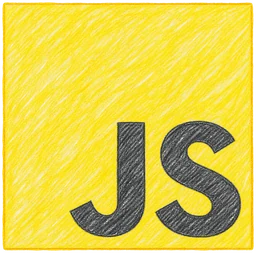
Canvas Widget
I wanted to help students stay on top of weekly assignments and bring information from multiple Canvas and MyASU pages into one simple location. Having assignment progress, course grades, and GPA tools together makes it easier to see what needs attention and understand how the semester is going.
- Built with
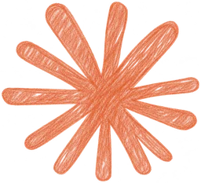
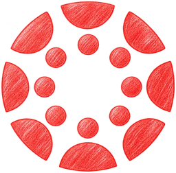
Demo uses sample courses and grades.
Questboard
Questboard began as an experiment with node-based tools, a format I hadn’t used before and wanted to explore. I focused on mini-games with the possibility of creating educational games for courses.
* Prepared map example. Edits won’t generate a new game.
- Built with
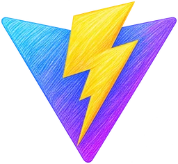
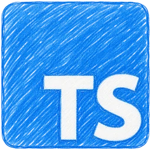
Disneyland Papercraft
My first finished game, a playable park made for friends and coworkers who are Disney fans. Explore familiar places, ride coasters, meet characters, collect pins, and discover small interactions. A nostalgic interpretation of Disneyland through paper shapes and color. I built it in my free time over a couple of months.
- Built with
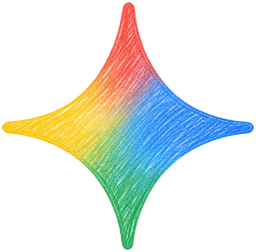
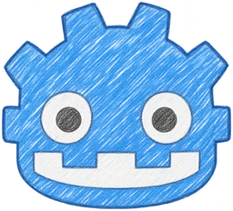
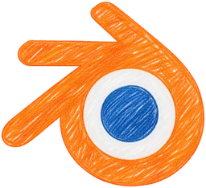
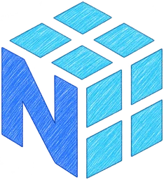
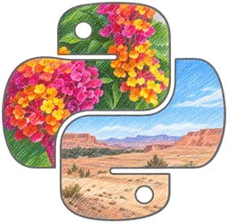
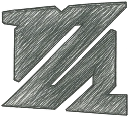
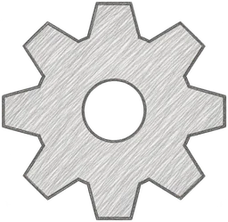
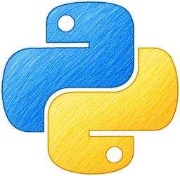